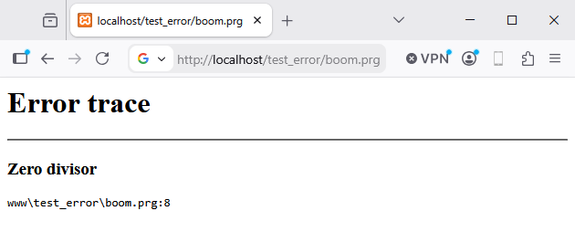
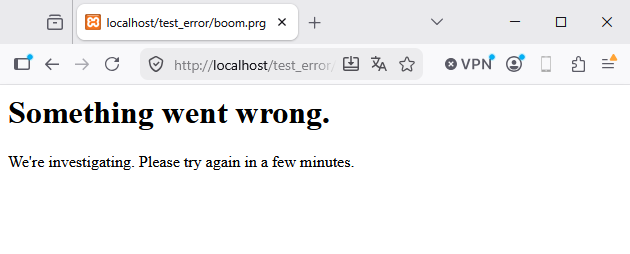

🛠️ Dev mode / Prod mode¶
HIX distinguishes two execution environments based on env:
dev— local development. Everything facilitates debugging: detailed errors, no asset caching, immediate template reloading.prod— production. Everything facilitates performance and security: generic errors, aggressive caching, templates compiled once.
Switching modes is a single line — and it alters the behavior of half the framework.
hix.json
"app" : {
"env" : "dev" ◀───── Local: F5 reloads, full traceback, no cache
"env" : "prod" ◀───── Real server: generic 500, assets cached 1h
}
What changes between modes¶
| Behavior | dev |
prod |
|---|---|---|
| Error pages | Detailed HTML with stack + source code | Generic 500 (or minimal errorsys template) |
Cache-Control for assets |
no-store — browser does not cache |
public, max-age=3600 — 1 hour |
Views .html |
Retranspile if file changes | In-memory cache, no recheck |
errors.log |
Same in both — always written | Same |
Traces _d() |
Visible if app.debug = true |
Usually off |
| Admin panel | Access if lAdminEnabled=.T. |
Better to disable or restrict by IP |
The two observable from the client differences are error pages and caching. The rest are server-side optimizations.
Error pages¶
In dev¶
HIX_ErrorSys renders a large HTML with an error fields table: description, subsystem, operation, file, line, and source code around the failing line highlighted in red.
┌─────────────────────────────────┐
│ View Error │
├─────────────────────────────────┤
│ Description: undefined var X │
│ Subsystem : BASE │
│ File : views/login.html │
│ Line : 23 │
│ │
│ 0020 <form action=".."> │
│ 0021 <input name="user"> │
│ 0022 <input name="pass"> │
│ => 0023 {{ X + 1 }} │
│ 0024 <button>OK</button> │
│ 0025 </form> │
└─────────────────────────────────┘
In prod¶
┌─────────────────────────────────┐
│ 500 - Internal Server Error │
└─────────────────────────────────┘
If you configure errorsys with your own template, prod mode uses your page, but with the information you decide to expose:
@args hErr
@if UIsProd()
<h1>Something went wrong.</h1>
<p>We're investigating. Please try again in a few minutes.</p>
@else
<h1>{{ UHtmlEncode(hErr["description"]) }}</h1>
<pre>{{ UHtmlEncode(hErr["file"]) }}:{{ hb_NToS(hErr["line"]) }}</pre>
@endif
DEV¶

PROD¶

Asset caching¶
The dispatcher emits different Cache-Control based on cEnv for files served from www/:
| Mode | Cache-Control |
|---|---|
dev |
no-store — reload every time |
prod |
public, max-age=3600 — 1 hour |
This applies to CSS, JS, images, and fonts. In dev, you modify app.css and a Ctrl+F5 brings it instantly; in prod, the browser reuses it for an hour without making a GET request.
Templates .html¶
| Mode | Behavior |
|---|---|
dev |
Engine retranspiles if file changed (mtime) |
prod |
Compiles first time, caches, does not recheck |
In production, edit and restart the server — there is no hot-reload for templates.
Different logs per environment¶
IF UIsDev()
HIX_LoggerInit( "logs/hix.log", HIX_LOG_DEBUG, .T. ) // verbose + console
ELSE
HIX_LoggerInit( "logs/hix.log", HIX_LOG_INFO, .F. ) // file only, info+
ENDIF
CSRF / stricter session in prod¶
IF UIsProd()
HIX_MwSessionSetup( "HIXSID", 1800, 60, "file", ".sessions/" ) // 30 min
ELSE
HIX_MwSessionSetup( "HIXSID", 86400, 60, "memory" ) // 1 day in RAM
ENDIF
Checklist before moving to prod¶
app.env = "prod"inhix.json.server.ssl = true+ valid certificates (Let's Encrypt).app.debug = falseand log level set toinfoorwarn.paths.errors = ".logs"(or a directory outside the webroot).- Admin panel disabled or behind IP whitelist.
- CORS with specific origins, not
"*". - Rate limit active on sensitive endpoints (
/login, ...). - Session cookie short (30–60 min) and
lSessionCrypt=.T.if file-based.